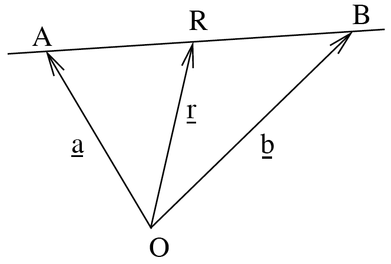
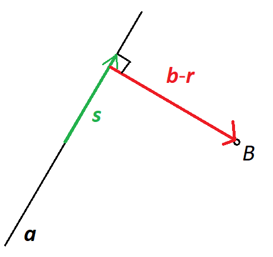

Week 7: Lines
\[ \newenvironment{amatrix}[1]{% \left[\begin{array}{#1} }{% \end{array}\right] } \]
This next section of the module uses vectors to think about geometry. We’ll describe lines, planes and spheres in terms of a general point with position vector \({\mathbf{r}}\). Whenever you see \({\mathbf{r}}\), you should think of a generic point that satisfies some conditions (like being on a plane), rather than \({\mathbf{a}}\), \({\mathbf{b}}\), \({\mathbf{c}}\) which are usually particular points in space.
Equations for lines
In mathematics, a line is a straight line which extends infinitely in both directions1. How can we describe this in terms of an equation?
Suppose you start at a point with position vector \({\mathbf{a}}\), and then you move by a displacement \({\mathbf{s}}\). You’re now at \({\mathbf{a}}+{\mathbf{s}}\).
Do it again. You’re at \({\mathbf{a}}+2{\mathbf{s}}\).
You’re moving in a straight line.
The points \[ {\mathbf{r}} = {\mathbf{a}}+\lambda{\mathbf{s}} \] all lie on a straight line, for any value of \(\lambda\). Here \({\mathbf{a}}\) is a particular point on the line, and the vector \({\mathbf{s}}\) tells you the direction of the line. This is the general equation of a line.
The equation of a line is not unique. \[{\mathbf{r}} = {\mathbf{a}} + \lambda {\mathbf{s}} \] and \[{\mathbf{r}} = ({\mathbf{a}}+3{\mathbf{s}}) + \lambda \frac{1}{2}{\mathbf{s}} \] both describe the same line. But the value of \(\lambda\) is different for any given point.
Example
Find an equation for the line going through the points \(A\) and \(B\) with position vectors \({\mathbf{a}}\) and \({\mathbf{b}}\).

Now we don’t know the direction of the line, but we can easily find it as the displacement vector \({\overrightarrow{AB}}={\mathbf{b}}-{\mathbf{a}}\).
We already know two points on the line. Picking \({\mathbf{a}}\) gives the final answer
\[ {\mathbf{r}} = {\mathbf{a}}+ \lambda \left({\mathbf{b}}-{\mathbf{a}}\right). \]
The distance from a point to a line
One particular and interesting problem we can think about is to find the distance of a point in space from a line.
If you think about this a bit you’ll realise it is a well-defined question, and it comes down to finding a straight line segment that connects the point to a point on the line such that the line segment is perpendicular to the original line:

This diagram is for the distance between a point \(B\) with position vector \({\mathbf{b}}\), and a line given by \[ {\mathbf{r}} = {\mathbf{a}} + \lambda{\mathbf{s}}. \]
We want to find a point \({\mathbf{r}}\) (and hence a value of \(\lambda\)) such that the displacement of the point \(B\) from this point on the line, i.e. \({\mathbf{b}}-{\mathbf{r}}\), is perpendicular to the line.
Remember that perpendicular means the dot product of the vectors is zero. So we need \[ \left({\mathbf{b}}-{\mathbf{r}}\right)\cdot{\mathbf{s}} = 0, \] i.e. \[ \left({\mathbf{b}}-{\mathbf{a}} - \lambda{\mathbf{s}}\right)\cdot{\mathbf{s}} = 0. \] The only unknown thing in this equation is \(\lambda\). Rearranging we find \[ \lambda = \frac{\left({\mathbf{b}}-{\mathbf{a}}\right)\cdot{\mathbf{s}}}{|{\mathbf{s}}|^2}, \] and so the position on the line nearest the point \(B\) is given by \[ {\mathbf{r}} = {\mathbf{a}} + \frac{\left({\mathbf{b}}-{\mathbf{a}}\right)\cdot{\mathbf{s}}}{|{\mathbf{s}}|^2}{\mathbf{s}}. \] Finally, we can calculate the distance of the point from the line as \[ \left|{\mathbf{b}}-{\mathbf{r}}\right| = \left|{\mathbf{b}}-{\mathbf{a}} - \frac{\left({\mathbf{b}}-{\mathbf{a}}\right)\cdot{\mathbf{s}}}{|{\mathbf{s}}|^2}{\mathbf{s}}\right|. \] Everything here is known, so you can compute this. You could learn this as a formula, but it’s better to understand the process.
Example
Find the distance of the point \((1,1,0)\) from the line \[ {\mathbf{r}} = [0,0,1] + \lambda [1,1,1]. \]
Following the above method, the nearest point on the line is when \[ \left([1,1,0] - [0,0,1] - \lambda [1,1,1]\right)\cdot [1,1,1] = 0, \] which gives \[ 1 - 3\lambda = 0, \] so \(\lambda = 1/3\).
The point is \({\mathbf{r}} = [0,0,1] + [1,1,1]/3 = [1/3,1/3,4/3]\), and so the distance between this and the original point is \[ \left| [1,1,0] - [1/3,1/3,4/3]\right| = \sqrt{4/9 + 4/9 + 16/9} = 4\sqrt{2}/3. \]
Intersections of lines
In general, two lines in 3D space don’t intersect. This is actually quite a rare occurrence. But if they do intersect, it’s easy to find out where.
Suppose we have two lines with equations \[ {\mathbf{r}} = {\mathbf{a}} + \lambda{\mathbf{b}} \] and \[ {\mathbf{r}} = {\mathbf{c}} + \mu{\mathbf{d}}. \] Here \({\mathbf{a}}\), \({\mathbf{b}}\), \({\mathbf{c}}\) and \({\mathbf{d}}\) are some vectors that we know, and \(\lambda\) and \(\mu\) are arbitrary scalars, different for each point on the line. We need to use different letters for \(\lambda\) and \(\mu\)2 because they could be different values for the same point in space.
If the lines intersect, then the point where they meet satisfies both of these equations. So we must have \[ {\mathbf{a}} + \lambda{\mathbf{b}} = {\mathbf{c}} + \mu{\mathbf{d}}. \] This looks like one equation for two unknown variables \(\lambda\) and \(\mu\), but remember that this is a vector equation, so really it’s three equations3 so it’s okay.
How do we solve this? Well, it’s just a linear system: \[ \begin{aligned} b_1 \lambda - d_1 \mu &= c_1 - a_1,\\ b_2 \lambda - d_2 \mu &= c_2 - a_2,\\ b_3 \lambda - d_3 \mu &= c_3 - a_3. \end{aligned} \] You can solve these via Gaussian elimination. In general, this won’t have a solution, but it may do, and you’ll find out by whether the Gaussian elimination proceeds.
If there is no solution, the lines don’t intersect.
If there is a solution, the lines do intersect, and the value of \(\lambda\) or \(\mu\) will tell you where when you substitute it back into the line equation.
We could also have infinitely many solutions, if the lines are exactly the same. This will have if they are paralell and exactly line on each other. Remember that Gaussian elimination tells us when we have infinitely many solutions.
Example
Find the point of intersection of the lines \[ \mathbf{r} = [0,0,1] + \lambda[1,1,0]\] and \[ \mathbf{r} = [2,0,1] + \mu[1,0,0].\]
Equating the two lines and rewriting as simulatenous equations gives \[ \begin{aligned} \lambda &= 2+\mu,\\ \lambda &= 0,\\ 1 &= 1. \end{aligned} \] The final equation is automatically true, and the second equation just gives you the value of \(\lambda=0\), so the first one tells us that \(\mu=-2\).
Then the intersection point is just \([2,0,1] - 2[1,0,0]=[0,0,1]\), which is indeed a point on both lines.
The distance between two lines
We saw that two lines in 3D don’t generally intersect. If they don’t, is there a well defined distance between them? If the lines are parallel, it’s kind of intuitively obvious that there’s a fixed distance between them.
If lines aren’t parallel (which we sometimes describe as the lines being skew) then in fact we can find a minimum distance between them. If the lines intersect, this is zero, but otherwise it’s some positive number.
Suppose we have two lines with equations \[ {\mathbf{r}} = {\mathbf{a}} + \lambda{\mathbf{b}} \] and \[ {\mathbf{r}} = {\mathbf{c}} + \mu{\mathbf{d}}. \]
Think about the displacement vector between a point \(P\) on the first line, with parameter value \(\lambda\), and a point \(Q\) on the second line with parameter \(\mu\): \[ {\overrightarrow{PQ}} = ({\mathbf{c}} + \mu{\mathbf{d}}) - ({\mathbf{a}} + \lambda{\mathbf{b}}). \]
Hopefully you can convince yourself that the distance between the lines – the magnitude of this displacement vector \(|{\overrightarrow{PQ}}|\) – is shortest when this displacement is perpendicular to both lines.4
So then we must have \[ {\mathbf{b}}\cdot{\overrightarrow{PQ}}=0 \] and \[ {\mathbf{d}}\cdot{\overrightarrow{PQ}}=0. \]
Expanding these out gives \[ 0={\mathbf{b}}\cdot({\mathbf{c}} + \mu{\mathbf{d}} - {\mathbf{a}} - \lambda{\mathbf{b}}) \] and \[ 0={\mathbf{d}}\cdot({\mathbf{c}} + \mu{\mathbf{d}} - {\mathbf{a}} - \lambda{\mathbf{b}}). \] These are two equations for two unknowns, so we can solve for \(\lambda\) and \(\mu\) and hence find the shortest distance \(|{\overrightarrow{PQ}}|\).
Example
What is the shortest distance between the lines \({\mathbf{r}} = [1,1,5]+\lambda[1,-1,2]\) and \({\mathbf{r}}=[4,2,-7]+\mu[1,1,4]\)?
The displacement is \[ {\overrightarrow{PQ}} = [3,1,-12] +\mu[1,1,4]+\lambda[-1,1,-2]. \] If this vector is perpedicular to both \([1,1,4]\) and \([1,-1,2]\) then \[ 0 = [1,1,4]\cdot[3,1,-12] + \mu [1,1,4]\cdot[1,1,4]+\lambda[1,1,4]\cdot[-1,1,-2] = -44 + 18\mu -8\lambda \] and \[ 0 = [1,-1,2]\cdot[3,1,-12] + \mu [1,-1,2]\cdot[1,1,4]+\lambda[1,-1,2]\cdot[-1,1,-2] = -22 + 8\mu -6\lambda \] i.e. the linear system of equations \[ \begin{aligned} 18\mu-8\lambda &= 44,\\ 8\mu-6\lambda&=22, \end{aligned} \] which has the unique solution \(\lambda=-1\), \(\mu=2\).
So finally the distance between the lines is \[ |{\overrightarrow{PQ}}| = \left| [3,1,-12] +2[1,1,4]-1[-1,1,-2]\right| = \left|[6,2,-2]\right| = \sqrt{36+4+4} = \sqrt{44}. \]
Footnotes
otherwise we talk about “curves”, “half lines” and “line segments”↩︎
But don’t feel like you need to use Greek letters if you’d be more comfortable with \(p\) and \(q\) or whatever.↩︎
For 3D vectors.↩︎
If this doesn’t seem obvious to you, it turns into a calculus exercise to find the minimum of a function of two variables, which is a bit too messy to show here.↩︎